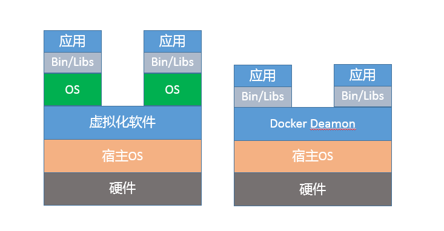

- 00 开篇词 以面试题为切入点，有效提升你的Java内功.md
- 01 谈谈你对Java平台的理解？.md
- 02 Exception和Error有什么区别？.md
- 03 谈谈final、finally、 finalize有什么不同？.md
- 04 强引用、软引用、弱引用、幻象引用有什么区别？.md
- 05 String、StringBuffer、StringBuilder有什么区别？.md
- 06 动态代理是基于什么原理？.md
- 07 int和Integer有什么区别？.md
- 08 对比Vector、ArrayList、LinkedList有何区别？.md
- 09 对比Hashtable、HashMap、TreeMap有什么不同？.md
- 10 如何保证集合是线程安全的_ ConcurrentHashMap如何实现高效地线程安全？.md
- 11 Java提供了哪些IO方式？ NIO如何实现多路复用？.md
- 12 Java有几种文件拷贝方式？哪一种最高效？.md
- 13 谈谈接口和抽象类有什么区别？.md
- 14 谈谈你知道的设计模式？.md
- 15 synchronized和ReentrantLock有什么区别呢？.md
- 16 synchronized底层如何实现？什么是锁的升级、降级？.md
- 17 一个线程两次调用start()方法会出现什么情况？.md
- 18 什么情况下Java程序会产生死锁？如何定位、修复？.md
- 19 Java并发包提供了哪些并发工具类？.md
- 20 并发包中的ConcurrentLinkedQueue和LinkedBlockingQueue有什么区别？.md
- 21 Java并发类库提供的线程池有哪几种？ 分别有什么特点？.md
- 22 AtomicInteger底层实现原理是什么？如何在自己的产品代码中应用CAS操作？.md
- 23 请介绍类加载过程，什么是双亲委派模型？.md
- 24 有哪些方法可以在运行时动态生成一个Java类？.md
- 25 谈谈JVM内存区域的划分，哪些区域可能发生OutOfMemoryError_.md
- 26 如何监控和诊断JVM堆内和堆外内存使用？.md
- 27 Java常见的垃圾收集器有哪些？.md
- 28 谈谈你的GC调优思路_.md
- 29 Java内存模型中的happen-before是什么？.md
- 30 Java程序运行在Docker等容器环境有哪些新问题？.md
- 31 你了解Java应用开发中的注入攻击吗？.md
- 32 如何写出安全的Java代码？.md
- 33 后台服务出现明显“变慢”，谈谈你的诊断思路？.md
- 34 有人说“Lambda能让Java程序慢30倍”，你怎么看？.md
- 35 JVM优化Java代码时都做了什么？.md
- 36 谈谈MySQL支持的事务隔离级别，以及悲观锁和乐观锁的原理和应用场景？.md
- 37 谈谈Spring Bean的生命周期和作用域？.md
- 38 对比Java标准NIO类库，你知道Netty是如何实现更高性能的吗？.md
- 39 谈谈常用的分布式ID的设计方案？Snowflake是否受冬令时切换影响？.md
- 周末福利 谈谈我对Java学习和面试的看法.md
- 结束语 技术没有终点.md
30 Java程序运行在Docker等容器环境有哪些新问题？
如今，Docker等容器早已不是新生事物，正在逐步成为日常开发、部署环境的一部分。Java能否无缝地运行在容器环境，是否符合微服务、Serverless等新的软件架构和场景，在一定程度上也会影响未来的技术栈选择。当然，Java对Docker等容器环境的支持也在不断增强，自然地，Java在容器场景的实践也逐渐在面试中被涉及。我希望通过专栏今天这一讲，能够帮你能做到胸有成竹。
今天我要问你的问题是，Java程序运行在Docker等容器环境有哪些新问题？
典型回答
对于Java来说，Docker毕竟是一个较新的环境，例如，其内存、CPU等资源限制是通过CGroup（Control Group）实现的，早期的JDK版本（8u131之前）并不能识别这些限制，进而会导致一些基础问题：
-
如果未配置合适的JVM堆和元数据区、直接内存等参数，Java就有可能试图使用超过容器限制的内存，最终被容器OOM kill，或者自身发生OOM。
-
错误判断了可获取的CPU资源，例如，Docker限制了CPU的核数，JVM就可能设置不合适的GC并行线程数等。
从应用打包、发布等角度出发，JDK自身就比较大，生成的镜像就更为臃肿，当我们的镜像非常多的时候，镜像的存储等开销就比较明显了。
如果考虑到微服务、Serverless等新的架构和场景，Java自身的大小、内存占用、启动速度，都存在一定局限性，因为Java早期的优化大多是针对长时间运行的大型服务器端应用。
考点分析
今天的问题是个针对特定场景和知识点的问题，我给出的回答简单总结了目前业界实践中发现的一些问题。
如果我是面试官，针对这种问题，如果你确实没有太多Java在Docker环境的使用经验，直接说不知道，也算是可以接受的，毕竟没有人能够掌握所有知识点嘛。
但我们要清楚，有经验的面试官，一般不会以纯粹偏僻的知识点作为面试考察的目的，更多是考察思考问题的思路和解决问题的方法。所以，如果有基础的话，可以从操作系统、容器原理、JVM内部机制、软件开发实践等角度，展示系统性分析新问题、新场景的能力。毕竟，变化才是世界永远的主题，能够在新变化中找出共性与关键，是优秀工程师的必备能力。
今天我会围绕下面几个方面展开：
-
面试官可能会进一步问到，有没有想过为什么类似Docker这种容器环境，会有点“欺负”Java？从JVM内部机制来说，问题出现在哪里？
-
我注意到有种论调说“没人在容器环境用Java”，不去争论这个观点正确与否，我会从工程实践出发，梳理问题原因和相关解决方案，并探讨下新场景下的最佳实践。
知识扩展
首先，我们先来搞清楚Java在容器环境的局限性来源，Docker到底有什么特别？
虽然看起来Docker之类容器和虚拟机非常相似，例如，它也有自己的shell，能独立安装软件包，运行时与其他容器互不干扰。但是，如果深入分析你会发现，Docker并不是一种完全的虚拟化技术，而更是一种轻量级的隔离技术。- 
上面的示意图，展示了Docker与虚拟机的区别。从技术角度，基于namespace，Docker为每个容器提供了单独的命名空间，对网络、PID、用户、IPC通信、文件系统挂载点等实现了隔离。对于CPU、内存、磁盘IO等计算资源，则是通过CGroup进行管理。如果你想了解更多Docker的细节，请参考相关技术文档。
Docker仅在类似Linux内核之上实现了有限的隔离和虚拟化，并不是像传统虚拟化软件那样，独立运行一个新的操作系统。如果是虚拟化的操作系统，不管是Java还是其他程序，只要调用的是同一个系统API，都可以透明地获取所需的信息，基本不需要额外的兼容性改变。
容器虽然省略了虚拟操作系统的开销，实现了轻量级的目标，但也带来了额外复杂性，它限制对于应用不是透明的，需要用户理解Docker的新行为。所以，有专家曾经说过，“幸运的是Docker没有完全隐藏底层信息，但是不幸的也是Docker没有隐藏底层信息！”
对于Java平台来说，这些未隐藏的底层信息带来了很多意外的困难，主要体现在几个方面：
第一，容器环境对于计算资源的管理方式是全新的，CGroup作为相对比较新的技术，历史版本的Java显然并不能自然地理解相应的资源限制。
第二，namespace对于容器内的应用细节增加了一些微妙的差异，比如jcmd、jstack等工具会依赖于“/proc//”下面提供的部分信息，但是Docker的设计改变了这部分信息的原有结构，我们需要对原有工具进行修改以适应这种变化。
从JVM运行机制的角度，为什么这些“沟通障碍”会导致OOM等问题呢？
你可以思考一下，这个问题实际是反映了JVM如何根据系统资源（内存、CPU等）情况，在启动时设置默认参数。
这就是所谓的Ergonomics机制，例如：
-
JVM会大概根据检测到的内存大小，设置最初启动时的堆大小为系统内存的1/64；并将堆最大值，设置为系统内存的1/4。
-
而JVM检测到系统的CPU核数，则直接影响到了Parallel GC的并行线程数目和JIT complier线程数目，甚至是我们应用中ForkJoinPool等机制的并行等级。
这些默认参数，是根据通用场景选择的初始值。但是由于容器环境的差异，Java的判断很可能是基于错误信息而做出的。这就类似，我以为我住的是整栋别墅，实际上却只有一个房间是给我住的。
更加严重的是，JVM的一些原有诊断或备用机制也会受到影响。为保证服务的可用性，一种常见的选择是依赖“-XX:OnOutOfMemoryError”功能，通过调用处理脚本的形式来做一些补救措施，比如自动重启服务等。但是，这种机制是基于fork实现的，当Java进程已经过度提交内存时，fork新的进程往往已经不可能正常运行了。
根据前面的总结，似乎问题非常棘手，那我们在实践中，如何解决这些问题呢？
首先，如果你能够升级到最新的JDK版本，这个问题就迎刃而解了。
- 针对这种情况，JDK 9中引入了一些实验性的参数，以方便Docker和Java“沟通”，例如针对内存限制，可以使用下面的参数设置：
-XX:+UnlockExperimentalVMOptions
-XX:+UseCGroupMemoryLimitForHeap
注意，这两个参数是顺序敏感的，并且只支持Linux环境。而对于CPU核心数限定，Java已经被修正为可以正确理解“–cpuset-cpus”等设置，无需单独设置参数。
- 如果你可以切换到JDK 10或者更新的版本，问题就更加简单了。Java对容器（Docker）的支持已经比较完善，默认就会自适应各种资源限制和实现差异。前面提到的实验性参数“UseCGroupMemoryLimitForHeap”已经被标记为废弃。
与此同时，新增了参数用以明确指定CPU核心的数目。
-XX:ActiveProcessorCount=N
如果实践中发现有问题，也可以使用“-XX:-UseContainerSupport”，关闭Java的容器支持特性，这可以作为一种防御性机制，避免新特性破坏原有基础功能。当然，也欢迎你向OpenJDK社区反馈问题。
- 幸运的是，JDK 9中的实验性改进已经被移植到Oracle JDK 8u131之中，你可以直接下载相应镜像，并配置“UseCGroupMemoryLimitForHeap”，后续很有可能还会进一步将JDK 10中相关的增强，应用到JDK 8最新的更新中。
但是，如果我暂时只能使用老版本的JDK怎么办？
我这里有几个建议：
- 明确设置堆、元数据区等内存区域大小，保证Java进程的总大小可控。
例如，我们可能在环境中，这样限制容器内存：
$ docker run -it --rm --name yourcontainer -p 8080:8080 -m 800M repo/your-java-container:openjdk
那么，就可以额外配置下面的环境变量，直接指定JVM堆大小。
-e JAVA_OPTIONS='-Xmx300m'
- 明确配置GC和JIT并行线程数目，以避免二者占用过多计算资源。
-XX:ParallelGCThreads
-XX:CICompilerCount
除了我前面介绍的OOM等问题，在很多场景中还发现Java在Docker环境中，似乎会意外使用Swap。具体原因待查，但很有可能也是因为Ergonomics机制失效导致的，我建议配置下面参数，明确告知JVM系统内存限额。
-XX:MaxRAM=`cat /sys/fs/cgroup/memory/memory.limit_in_bytes`
也可以指定Docker运行参数，例如：
--memory-swappiness=0
这是受操作系统Swappiness机制影响，当内存消耗达到一定门限，操作系统会试图将不活跃的进程换出（Swap out），上面的参数有显式关闭Swap的作用。所以可以看到，Java在Docker中的使用，从操作系统、内核到JVM自身机制，需要综合运用我们所掌握的知识。
回顾我在专栏第25讲JVM内存区域的介绍，JVM内存消耗远不止包括堆，很多时候仅仅设置Xmx是不够的，MaxRAM也有助于JVM合理分配其他内存区域。如果应用需要设置更多Java启动参数，但又不确定什么数值合理，可以试试一些社区提供的工具，但要注意通用工具的局限性。
更进一步来说，对于容器镜像大小的问题，如果你使用的是JDK 9以后的版本，完全可以使用jlink工具定制最小依赖的Java运行环境，将JDK裁剪为几十M的大小，这样运行起来并不困难。
今天我从Docker环境中Java可能出现的问题开始，分析了为什么容器环境对应用并不透明，以及这种偏差干扰了JVM的相关机制。最后，我从实践出发，介绍了主要问题的解决思路，希望对你在实际开发时有所帮助。
一课一练
关于今天我们讨论的题目你做到心中有数了吗？今天的思考题是，针对我提到的微服务和Serverless等场景Java表现出的不足，有哪些方法可以改善Java的表现？
请你在留言区写写你对这个问题的思考，我会选出经过认真思考的留言，送给你一份学习奖励礼券，欢迎你与我一起讨论。
你的朋友是不是也在准备面试呢？你可以“请朋友读”，把今天的题目分享给好友，或许你能帮到他。
© 2019 - 2023 Liangliang Lee. Powered by Vert.x and hexo-theme-book.